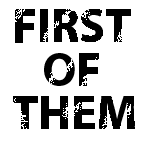
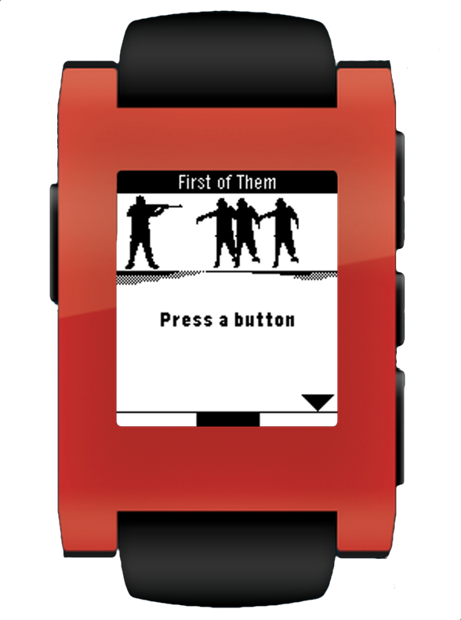

Fight back zombies by pressing any button, at just the right, time to shoot them incoming zombies down. If you aren't precise enough they will eventually get to you. See how long you can survive!

First of Them was created for the 24hr YCombinator Hackathon with a team of three MakeGamesWithUs alumni(Rudy Gomez, Arad Reed, me). Our obsession for Last of Us led us to design and create our game, First of Them. This game is written in C and is playable on the Pebble SmartWatch. It is available for download on the Pebble Appstore and we plan on releasing a version for the new Apple Watch.